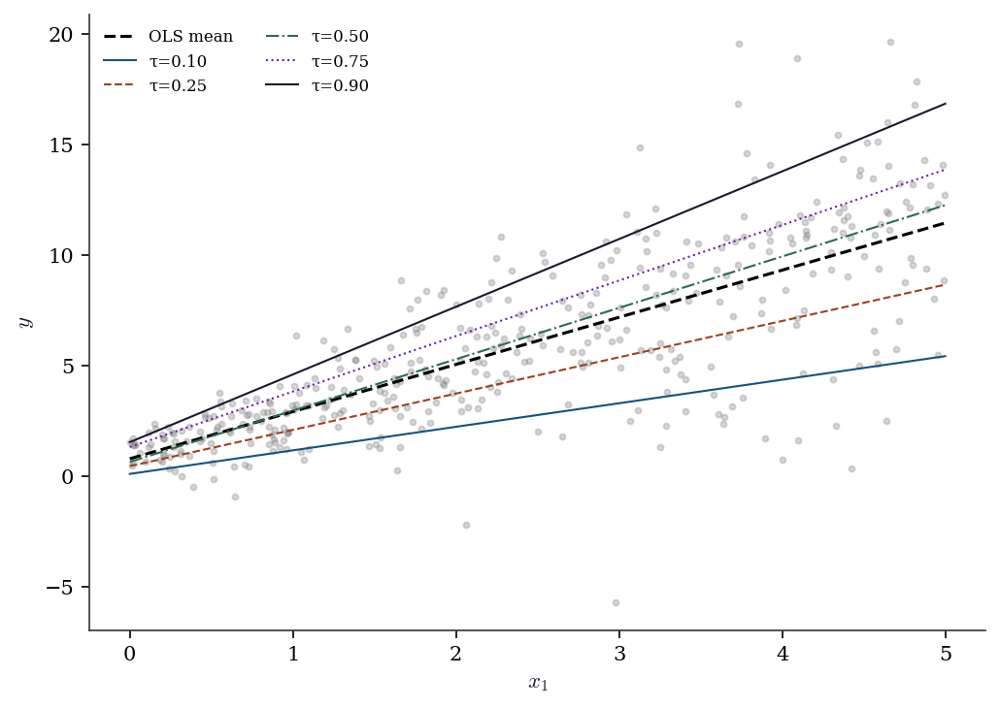
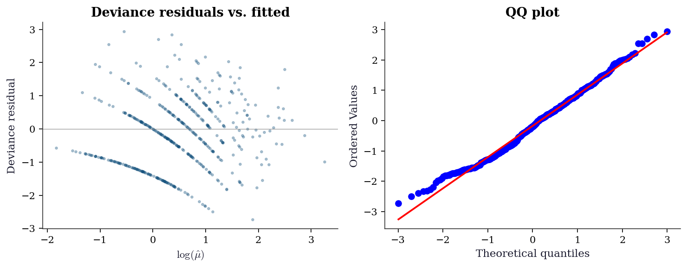
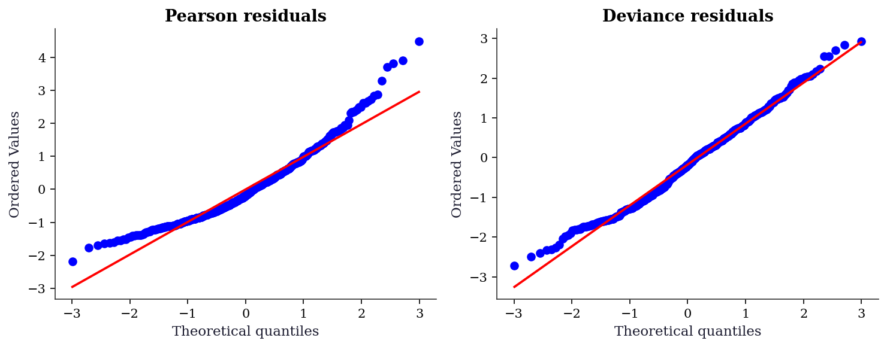
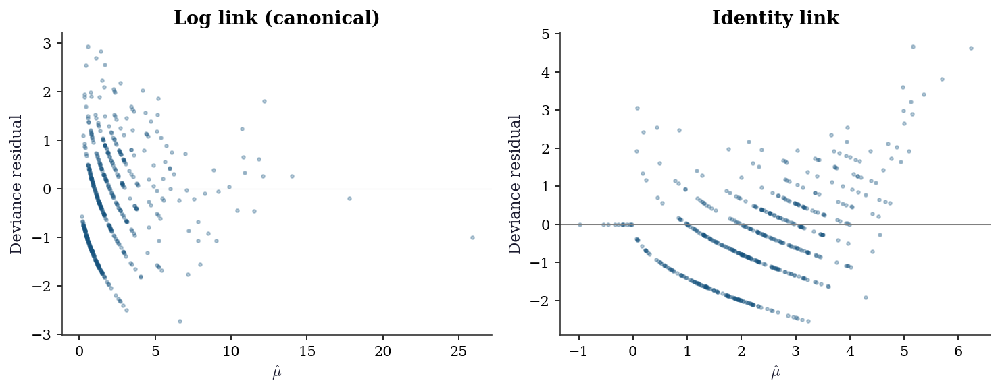
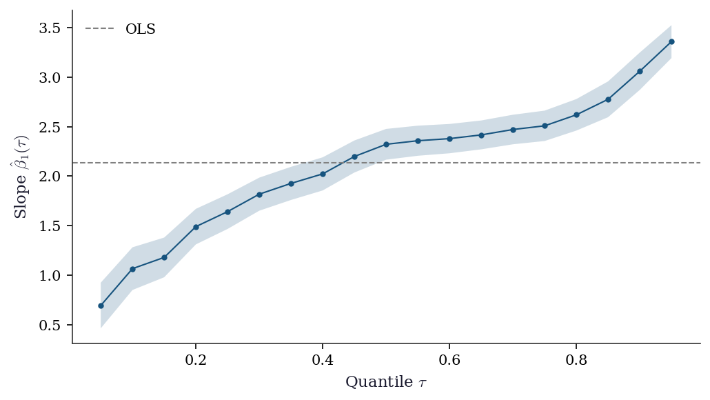
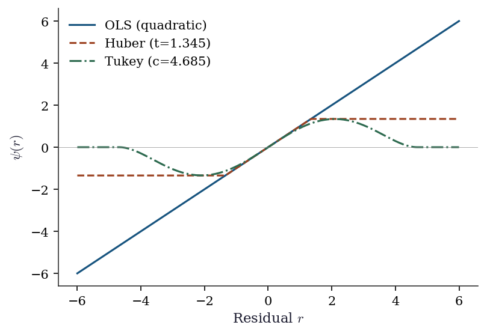

import numpy as np
import matplotlib.pyplot as plt
import statsmodels.api as sm
from statsmodels.genmod.families import Gaussian, Binomial, Poisson, NegativeBinomial, Gamma
from scipy import stats
plt.style.use('assets/book.mplstyle')
rng = np.random.default_rng(42)12 Generalized Linear Models and M-Estimation
12.1 Notation for this chapter
| Symbol | Meaning | statsmodels |
|---|---|---|
| \(\mu_i = \mathbb{E}[y_i \mid \mathbf{x}_i]\) | Conditional mean | .mu |
| \(g(\mu) = \eta = \mathbf{x}^\top\boldsymbol{\beta}\) | Link function | family.link |
| \(b(\theta)\) | Cumulant function (exp. family) | |
| \(\phi\) | Dispersion parameter | .scale |
| \(\psi(r)\) | M-estimator loss function | sm.robust.norms |
| \(\psi'(r)\) | Influence (weight) function | |
| \(\rho_\tau(u) = u(\tau - \mathbb{1}(u < 0))\) | Check loss (quantile regression) |
13 Motivation
Chapters 10–11 covered linear regression: \(y = \mathbf{x}^\top\boldsymbol{\beta} + \varepsilon\) with continuous \(y\) and constant variance. But many response variables are not continuous: counts (number of doctor visits), binary (default / no default), positive continuous (insurance claims). And many relationships are not linear: the effect of income on spending probability is S-shaped, not a straight line.
Generalized linear models (GLMs) extend regression to non-normal responses through a link function that maps the linear predictor \(\eta = \mathbf{x}^\top\boldsymbol{\beta}\) to the mean \(\mu\). Logistic regression (Chapter 1’s LogisticRegression) is a GLM. So is Poisson regression for counts and Gamma regression for positive continuous data.
But the real insight of this chapter is that GLMs are a special case of something more general: M-estimation. An M-estimator solves \(\sum_i \psi(y_i, \mathbf{x}_i; \boldsymbol{\theta}) = \mathbf{0}\) for some function \(\psi\). When \(\psi\) is the score of a GLM, M-estimation is maximum likelihood. When \(\psi\) is Huber’s function, M-estimation is robust regression. When \(\psi\) is the subgradient of the check loss, M-estimation is quantile regression.
This unification matters because the inference is the same: all three use the sandwich covariance from Chapter 10, all three support Wald/score/LR tests from Chapter 10, and all three have the same asymptotic theory. Learn it once, use it everywhere.
14 Mathematical Foundation
14.1 The GLM framework
A GLM has three components:
Random component: \(y_i \sim \text{ExponentialFamily}(\theta_i, \phi)\) with density \(f(y; \theta, \phi) = \exp\left[\frac{y\theta - b(\theta)}{\phi} + c(y, \phi)\right]\).
Systematic component: \(\eta_i = \mathbf{x}_i^\top\boldsymbol{\beta}\) (the linear predictor).
Link function: \(g(\mu_i) = \eta_i\), where \(\mu_i = \mathbb{E}[y_i] = b'(\theta_i)\).
The canonical link is \(g(\mu) = \theta\) (the natural parameter is the linear predictor). For the canonical link, the score has a particularly simple form: \(S(\boldsymbol{\beta}) = \mathbf{X}^\top(\mathbf{y} - \boldsymbol{\mu})\).
| Family | \(b(\theta)\) | Canonical link \(g(\mu)\) | \(\text{Var}(y)\) |
|---|---|---|---|
| Gaussian | \(\theta^2/2\) | Identity: \(\mu\) | \(\phi\) |
| Binomial | \(\ln(1 + e^\theta)\) | Logit: \(\ln(\mu/(1-\mu))\) | \(\mu(1-\mu)\) |
| Poisson | \(e^\theta\) | Log: \(\ln(\mu)\) | \(\mu\) |
| Gamma | \(-\ln(-\theta)\) | Inverse: \(1/\mu\) | \(\mu^2\) |
| Negative Binomial | \(-r\ln(1-e^\theta)\) | Log | \(\mu + \mu^2/r\) |
14.1.1 Why the cumulant function determines everything
The cumulant function \(b(\theta)\) is not just bookkeeping — it encodes the mean and variance of the distribution. Differentiating the log-normalizing constant:
\[ \mathbb{E}[Y] = b'(\theta), \qquad \text{Var}(Y) = \phi \, b''(\theta). \]
The first identity follows from setting \(\partial/\partial\theta\) of \(\int f(y;\theta,\phi)\,dy = 1\) and recognizing the resulting integral as \(\mathbb{E}[Y]\). The second follows from differentiating again (the variance is the curvature of \(b\)).
Verify for Poisson. The Poisson cumulant function is \(b(\theta) = e^\theta\). Then \(b'(\theta) = e^\theta = \mu\) (the mean) and \(b''(\theta) = e^\theta = \mu\) (the variance). So \(\text{Var}(Y) = \phi \cdot \mu\) with \(\phi = 1\) — the variance equals the mean, the defining property of Poisson data. If your data shows \(\text{Var}(Y) > \mu\), the Poisson assumption is wrong and you need negative binomial or quasi-Poisson (see sec-ch12-diagnostics).
This also explains why the canonical link simplifies the score equation. When \(g(\mu) = \theta\) (canonical link), the chain rule collapses and the score becomes:
\[ S(\boldsymbol{\beta}) = \frac{1}{\phi}\mathbf{X}^\top (\mathbf{y} - \boldsymbol{\mu}). \]
This is the residual vector \((\mathbf{y} - \boldsymbol{\mu})\) projected onto the column space of \(\mathbf{X}\) — exactly the same form as the OLS score. Setting \(S = \mathbf{0}\) says: the residuals are orthogonal to every predictor. The canonical link makes the GLM score look like linear regression’s normal equations, which is why statsmodels uses canonical links as defaults.
14.2 IRLS: how statsmodels fits GLMs
GLM fitting uses Iteratively Reweighted Least Squares (IRLS), which is Fisher scoring (Newton’s method with expected information):
At each iteration: \[ \boldsymbol{\beta}^{(k+1)} = (\mathbf{X}^\top\mathbf{W}^{(k)}\mathbf{X})^{-1}\mathbf{X}^\top\mathbf{W}^{(k)}\mathbf{z}^{(k)}, \] where \(\mathbf{W} = \text{diag}(w_i)\) with \(w_i = 1/[\text{Var}(\mu_i) \cdot g'(\mu_i)^2]\) and the working response is \(z_i = \eta_i + (y_i - \mu_i) g'(\mu_i)\).
This is just weighted OLS at each step — hence the name “reweighted least squares.” The connection to Chapter 2: IRLS is Newton’s method on the negative log-likelihood, using the expected information instead of the observed information. Each iteration costs \(O(np^2)\), the same as OLS.
14.2.1 Fisher scoring vs. Newton’s method
Newton’s method uses the observed Hessian \(\nabla^2 \ell(\boldsymbol{\beta})\), which depends on the particular \(y\) values. Fisher scoring replaces it with the expected Hessian \(-\mathcal{I}(\boldsymbol{\beta}) = -\mathbb{E}[\nabla^2 \ell] = -\mathbf{X}^\top\mathbf{W}\mathbf{X}\).
The weight matrix \(\mathbf{W}\) depends on \(\boldsymbol{\mu}\) but not on \(\mathbf{y}\). This has two consequences:
Guaranteed positive definiteness. Since \(w_i > 0\) for all \(\mu_i\) in the support, \(\mathbf{X}^\top\mathbf{W}\mathbf{X}\) is always positive definite (assuming \(\mathbf{X}\) has full rank). Newton’s observed Hessian can be indefinite away from the MLE, causing the iteration to diverge. Fisher scoring never has this problem — the curvature estimate is always a bowl.
Stability. The expected information is a smooth function of \(\boldsymbol{\mu}\), not of individual residuals. A single unusual \(y_i\) can make the observed Hessian erratic; the expected Hessian just sees the current fitted means. This is why IRLS converges reliably even when Newton might oscillate.
For canonical links, Fisher scoring and Newton coincide — the observed and expected information are equal. For non-canonical links (e.g., identity link with Poisson), they differ, and Fisher scoring is the safer choice.
14.3 M-estimation: the unifying framework
An M-estimator solves: \[ \sum_{i=1}^n \psi(y_i, \mathbf{x}_i; \hat{\boldsymbol{\theta}}) = \mathbf{0}, \tag{14.1}\]
where \(\psi\) is a vector-valued estimating equation.
| Estimator | \(\psi\) function | Statsmodels |
|---|---|---|
| GLM (MLE) | Score: \(\nabla_\theta \log f(y; \theta)\) | GLM |
| OLS | \(\mathbf{x}(y - \mathbf{x}^\top\boldsymbol{\beta})\) | OLS |
| Huber robust | \(\mathbf{x} \cdot \psi_H(r_i/\hat{\sigma})\) | RLM(M=HuberT()) |
| Quantile regression | \(\mathbf{x}(\tau - \mathbb{1}(r_i < 0))\) | QuantReg |
The sandwich covariance applies to all M-estimators: \[ \text{Cov}(\hat{\boldsymbol{\theta}}) \approx \underbrace{\left[-\frac{1}{n}\sum_i \frac{\partial \psi_i}{\partial \boldsymbol{\theta}}\right]^{-1}}_{\text{bread}} \underbrace{\left[\frac{1}{n}\sum_i \psi_i \psi_i^\top\right]}_{\text{meat}} \underbrace{\left[-\frac{1}{n}\sum_i \frac{\partial \psi_i}{\partial \boldsymbol{\theta}}\right]^{-1}}_{\text{bread}}. \tag{14.2}\]
For correctly specified GLMs, the bread and meat simplify to \(\mathcal{I}^{-1}\) (the information matrix inverse). Under misspecification, they don’t — and the sandwich is needed.
14.4 Robust regression: bounding the influence
The influence function measures how much an estimator changes when you add one observation at \((x_0, y_0)\):
\[ \text{IF}(x_0, y_0; \hat{\theta}, F) = \lim_{\epsilon \to 0} \frac{\hat{\theta}((1-\epsilon)F + \epsilon \delta_{(x_0, y_0)}) - \hat{\theta}(F)}{\epsilon}. \]
For OLS, the influence function is \(\text{IF}(z) = (\mathbb{E}[\mathbf{x}\mathbf{x}^\top])^{-1} \mathbf{x}(y - \mathbf{x}^\top\boldsymbol{\beta})\) — unbounded in \(y\). A single outlier with a large residual can move the estimate arbitrarily far because the IF grows linearly with the residual.
For Huber’s M-estimator, the IF clips the residual contribution at \(\pm c\) (the tuning constant), so \(|\text{IF}| \leq c \cdot \|(\mathbb{E}[\mathbf{x}\mathbf{x}^\top])^{-1} \mathbf{x}\|\). The influence is bounded but never zero — every observation has some pull on the estimate.
For Tukey’s biweight, the IF is zero whenever \(|r| > c\). Observations with large residuals have no influence at all on the estimate — they are completely ignored. This makes Tukey more robust than Huber but less efficient when the data truly is normal, because it discards information from legitimate large residuals.
The connection to Chapter 11: Cook’s distance is the discrete analogue of the influence function. Cook’s \(D_i\) measures the actual change in \(\hat{\boldsymbol{\beta}}\) when observation \(i\) is deleted; the IF measures the infinitesimal change as you contaminate the distribution at that point. For large \(n\), they tell the same story.
14.4.1 Breakdown point
The breakdown point is the largest fraction of contaminated observations an estimator can tolerate before the estimate becomes arbitrarily wrong.
| Estimator | Breakdown point | Why |
|---|---|---|
| OLS | \(0\%\) (\(1/n\)) | One outlier can pull \(\hat{\beta} \to \infty\) |
| Median | \(50\%\) | Up to half the data can be corrupted |
| Huber M | Depends on \(c\) | Lower \(c\) = more robust, still \(< 50\%\) |
| Tukey biweight | Up to \(50\%\) | Zero-influence on large residuals |
OLS has the worst possible breakdown: a single point \((x_0, y_0)\) with \(y_0 \to \infty\) sends \(\hat{\boldsymbol{\beta}} \to \infty\). Robust M-estimators trade efficiency (at the normal model) for a higher breakdown point. The MM-estimator (not in statsmodels’ RLM, but available in R’s lmrob) achieves 50% breakdown and high efficiency — a strictly better tradeoff.
14.5 Quantile regression: the check loss
Quantile regression estimates the conditional \(\tau\)-th quantile by minimizing the check loss:
\[ \sum_i \rho_\tau(y_i - \mathbf{x}_i^\top\boldsymbol{\beta}), \qquad \rho_\tau(u) = u(\tau - \mathbb{1}(u < 0)). \]
This is an M-estimator with \(\psi_\tau(u) = \tau - \mathbb{1}(u < 0)\) — the subgradient of the check loss.
At the minimum, the subgradient condition requires:
\[ \sum_{i=1}^n \left(\tau - \mathbb{1}(r_i < 0)\right) \mathbf{x}_i = \mathbf{0}, \]
where \(r_i = y_i - \mathbf{x}_i^\top\hat{\boldsymbol{\beta}}\). Read this as a weighted balance condition: positive residuals contribute weight \(\tau\) and negative residuals contribute weight \(-(1-\tau)\). At \(\tau = 0.5\) (the median), positive and negative residuals are weighted equally — half the residuals should be above and half below, which is the definition of the median.
The check loss is convex but not differentiable at \(u = 0\) (it has a kink). This means gradient-based methods cannot be used directly; statsmodels’ QuantReg solves the linear program with an interior-point method instead.
Unlike OLS (which estimates the conditional mean), quantile regression is robust to outliers and provides a complete picture of how predictors affect the distribution, not just its center.
15 The Algorithm
16 Statistical Properties
GLM inference reuses the trinity. The Wald, score, and LR tests from Chapter 10 apply directly to GLMs. The deviance \(D = 2[\ell_{\text{saturated}} - \ell(\hat{\boldsymbol{\beta}})]\) serves as the GLM’s analogue of the residual sum of squares. Under the true model, \(D/\phi \xrightarrow{d} \chi^2_{n-p}\).
Overdispersion. When the observed variance exceeds what the model predicts (\(\text{Var}(y) > \phi \cdot V(\mu)\)), the standard errors are too small and \(p\)-values too liberal. The fix: estimate \(\phi\) from the Pearson chi-squared statistic and use quasi-likelihood inference (multiply the covariance by \(\hat{\phi}\)). Statsmodels’ scale='X2' does this.
Robust M-estimators trade bias for robustness. Huber’s estimator is biased at the true model (because it downweights large residuals that may be legitimate), but has bounded influence. The bias is small when the fraction of outliers is small — the classic bias-robustness tradeoff.
17 Statsmodels Implementation
17.1 GLM: the exponential family
# Poisson regression for count data
n = 500
X = rng.standard_normal((n, 2))
mu = np.exp(0.5 + 0.8*X[:, 0] - 0.3*X[:, 1])
y_counts = rng.poisson(mu)
X_sm = sm.add_constant(X)
# Fit Poisson GLM
glm_pois = sm.GLM(
endog=y_counts,
exog=X_sm,
family=Poisson(), # log link is default for Poisson
).fit()
print(glm_pois.summary().tables[1])
print(f"\nDeviance: {glm_pois.deviance:.2f}")
print(f"Pearson chi2: {glm_pois.pearson_chi2:.2f}")
print(f"AIC: {glm_pois.aic:.2f}")==============================================================================
coef std err z P>|z| [0.025 0.975]
------------------------------------------------------------------------------
const 0.4782 0.038 12.458 0.000 0.403 0.553
x1 0.8351 0.029 28.393 0.000 0.777 0.893
x2 -0.2981 0.028 -10.608 0.000 -0.353 -0.243
==============================================================================
Deviance: 545.36
Pearson chi2: 512.31
AIC: 1578.02Key defaults:
- Each family has a canonical link by default. Override with
family=Poisson(link=sm.families.links.Identity()). scale=None: dispersion estimated by Pearson chi2 / (n-p) for families with unknown dispersion (Gaussian, Gamma). For Poisson and Binomial, \(\phi = 1\) is assumed.cov_type='nonrobust': model-based covariance. Use'HC1'for heteroscedasticity-robust (just like OLS).
17.2 Gamma GLM: positive continuous data
When the response is positive and right-skewed — insurance claim amounts, hospital lengths of stay, reaction times — the Gamma family is the natural choice. The variance is proportional to \(\mu^2\) (the coefficient of variation is constant), which matches many real-world positive-valued data.
# Simulate positive continuous data (e.g., claim amounts)
n_gam = 500
X_gam = rng.standard_normal((n_gam, 2))
mu_gam = np.exp(3.0 + 0.4*X_gam[:, 0] - 0.2*X_gam[:, 1])
# Gamma: shape=5, scale=mu/5 => mean=mu, var=mu^2/5
y_gam = rng.gamma(shape=5, scale=mu_gam / 5)
X_gam_sm = sm.add_constant(X_gam)
glm_gamma = sm.GLM(
y_gam, X_gam_sm,
family=Gamma(link=sm.families.links.Log()),
).fit()
print(glm_gamma.summary().tables[1])
print(f"\nDispersion (1/shape): {glm_gamma.scale:.3f}")
print(f"True 1/shape: {1/5:.3f}")==============================================================================
coef std err z P>|z| [0.025 0.975]
------------------------------------------------------------------------------
const 2.9931 0.020 151.077 0.000 2.954 3.032
x1 0.4176 0.020 20.828 0.000 0.378 0.457
x2 -0.2164 0.020 -10.869 0.000 -0.255 -0.177
==============================================================================
Dispersion (1/shape): 0.195
True 1/shape: 0.200The canonical link for Gamma is the inverse (\(g(\mu) = 1/\mu\)), but the log link is more common in practice: it ensures \(\mu > 0\) and gives coefficients that are multiplicative on the original scale (a one-unit increase in \(x_1\) multiplies the mean by \(e^{\beta_1}\)). Statsmodels estimates the dispersion \(\phi = 1/k\) (where \(k\) is the shape parameter) from the Pearson statistic.
17.3 Robust regression: RLM
# Data with outliers
y_clean = X @ [2.0, -1.0] + rng.standard_normal(n)
y_outlier = y_clean.copy()
y_outlier[:10] = 50 # 10 extreme outliers
# OLS vs Huber vs Tukey biweight
ols_res = sm.OLS(y_outlier, X_sm).fit()
rlm_huber = sm.RLM(y_outlier, X_sm,
M=sm.robust.norms.HuberT()).fit()
rlm_tukey = sm.RLM(y_outlier, X_sm,
M=sm.robust.norms.TukeyBiweight()).fit()
print(f"{'Method':<15} {'beta_1':>8} {'beta_2':>8}")
print(f"{'True':<15} {'2.000':>8} {'-1.000':>8}")
print(f"{'OLS':<15} {ols_res.params[1]:>8.3f} {ols_res.params[2]:>8.3f}")
print(f"{'Huber':<15} {rlm_huber.params[1]:>8.3f} {rlm_huber.params[2]:>8.3f}")
print(f"{'Tukey':<15} {rlm_tukey.params[1]:>8.3f} {rlm_tukey.params[2]:>8.3f}")Method beta_1 beta_2
True 2.000 -1.000
OLS 2.167 -1.219
Huber 1.958 -0.971
Tukey 1.954 -0.958OLS is pulled toward the outliers. Huber downweights them. Tukey biweight completely ignores them (bounded influence). The tradeoff: Tukey is more robust but has lower efficiency under the normal model.
17.3.1 Tuning the robustness–efficiency tradeoff
The Huber tuning constant \(t\) controls where the loss transitions from quadratic to linear. Statsmodels defaults to \(t = 1.345\), which gives 95% asymptotic efficiency relative to OLS when the data is truly normal. Lower \(t\) means more robustness but lower efficiency.
# Compare Huber tuning constants
print(f"{'t':>6} {'beta_1':>8} {'beta_2':>8} {'SE(b1)':>8}")
print(f"{'True':>6} {'2.000':>8} {'-1.000':>8} {'':>8}")
for t in [1.0, 1.345, 2.0]:
res = sm.RLM(
y_outlier, X_sm,
M=sm.robust.norms.HuberT(t=t),
).fit()
print(f"{t:>6.3f} {res.params[1]:>8.3f} "
f"{res.params[2]:>8.3f} {res.bse[1]:>8.4f}") t beta_1 beta_2 SE(b1)
True 2.000 -1.000
1.000 1.955 -0.967 0.0481
1.345 1.958 -0.971 0.0475
2.000 1.958 -0.972 0.0482| Tuning constant | Efficiency (normal) | Use case |
|---|---|---|
| \(t = 1.0\) | ~89% | Suspected heavy contamination |
| \(t = 1.345\) | 95% (default) | General-purpose robust fit |
| \(t = 2.0\) | ~98% | Mild outlier protection |
17.4 Quantile regression
# Quantile regression at tau = 0.25, 0.50, 0.75
print(f"{'tau':<6} {'beta_0':>8} {'beta_1':>8} {'beta_2':>8}")
for tau in [0.25, 0.50, 0.75]:
qr = sm.QuantReg(y_clean, X_sm).fit(q=tau)
print(f"{tau:<6.2f} {qr.params[0]:>8.3f} "
f"{qr.params[1]:>8.3f} {qr.params[2]:>8.3f}")
print(f"\nOLS: {sm.OLS(y_clean, X_sm).fit().params.round(3)}")tau beta_0 beta_1 beta_2
0.25 -0.704 2.002 -0.946
0.50 -0.029 1.989 -0.989
0.75 0.613 1.904 -0.966
OLS: [-0.06 1.94 -0.966]The intercept changes across quantiles (the conditional distribution shifts); the slopes are roughly constant (homoscedastic data has parallel quantile lines). With heteroscedastic data, the slopes differ — this is where quantile regression earns its keep.
17.5 Quantile regression with heteroscedastic data
n_het = 400
x1_het = rng.uniform(0, 5, n_het)
# Variance grows with x1 (heteroscedastic)
y_het = 1 + 2 * x1_het + (0.5 + 0.8*x1_het) * rng.standard_normal(n_het)
X_het = sm.add_constant(x1_het)
fig, ax = plt.subplots(figsize=(7, 5))
ax.scatter(x1_het, y_het, s=8, alpha=0.3, color="gray")
ols_het = sm.OLS(y_het, X_het).fit()
xs = np.linspace(0, 5, 100)
ax.plot(xs, ols_het.params[0] + ols_het.params[1]*xs,
'--k', linewidth=1.5, label="OLS mean")
for tau in [0.10, 0.25, 0.50, 0.75, 0.90]:
qr = sm.QuantReg(y_het, X_het).fit(q=tau)
ax.plot(xs, qr.params[0] + qr.params[1]*xs,
linewidth=1, label=f"τ={tau:.2f}")
ax.set_xlabel("$x_1$")
ax.set_ylabel("$y$")
ax.legend(fontsize=8, ncol=2)
plt.tight_layout()
plt.show()
The slopes fan out: at \(\tau = 0.10\) the slope is smaller than at \(\tau = 0.90\). OLS averages over this heterogeneity. If you only report OLS, you miss that the effect of \(x_1\) is much larger in the upper tail of the distribution.
18 From-Scratch Implementation
18.1 IRLS for Poisson regression
def irls_poisson(X, y, tol=1e-8, maxiter=25):
"""IRLS for Poisson regression with log link.
Implements Algorithm 12.1 for the Poisson family.
"""
n, p = X.shape
beta = np.zeros(p) # initialize at zero
for k in range(maxiter):
eta = X @ beta
mu = np.exp(eta) # inverse link: exp
w = mu # Var(Y) = mu, g'(mu) = 1/mu
z = eta + (y - mu) / mu # working response
# Weighted OLS: (X'WX)^-1 X'Wz
W = np.diag(w)
beta_new = np.linalg.solve(X.T @ W @ X, X.T @ W @ z)
if np.max(np.abs(beta_new - beta)) < tol:
beta = beta_new
break
beta = beta_new
deviance = 2 * np.sum(y * np.log(np.maximum(y, 1e-10) / mu) - (y - mu))
return {'params': beta, 'deviance': deviance, 'nit': k}res_ours = irls_poisson(X_sm, y_counts)
print(f"From-scratch: {res_ours['params'].round(4)}, "
f"dev={res_ours['deviance']:.2f}")
print(f"statsmodels: {glm_pois.params.round(4)}, "
f"dev={glm_pois.deviance:.2f}")
print(f"Match: {np.allclose(res_ours['params'], glm_pois.params, atol=1e-3)}")From-scratch: [ 0.4782 0.8351 -0.2981], dev=545.36
statsmodels: [ 0.4782 0.8351 -0.2981], dev=545.36
Match: True18.2 Huber M-estimator via IRLS
Huber’s estimator uses IRLS too, but with a different weight function. Where the residual exceeds \(\pm c\), the loss switches from quadratic to linear, producing a bounded \(\psi\) function.
def irls_huber(X, y, c=1.345, tol=1e-8, maxiter=50):
"""Huber M-estimator via IRLS.
At each step, reweight observations by how close their
residuals are to the Huber threshold c.
"""
n, p = X.shape
beta = np.linalg.lstsq(X, y, rcond=None)[0] # OLS start
for k in range(maxiter):
r = y - X @ beta
# MAD scale estimate (robust sigma)
s = np.median(np.abs(r - np.median(r))) / 0.6745
r_scaled = r / max(s, 1e-10)
# Huber weights: 1 if |r| <= c, else c/|r|
w = np.where(
np.abs(r_scaled) <= c,
np.ones(n),
c / np.abs(r_scaled),
)
W = np.diag(w)
beta_new = np.linalg.solve(
X.T @ W @ X, X.T @ W @ y,
)
if np.max(np.abs(beta_new - beta)) < tol:
beta = beta_new
break
beta = beta_new
return {'params': beta, 'scale': s, 'weights': w, 'nit': k}res_hub = irls_huber(X_sm, y_outlier)
print(f"From-scratch: {res_hub['params'].round(4)}")
print(f"statsmodels: {rlm_huber.params.round(4)}")
print(f"Match: {np.allclose(res_hub['params'], rlm_huber.params, atol=0.05)}")From-scratch: [-0.0133 1.9586 -0.9715]
statsmodels: [-0.0134 1.9583 -0.9715]
Match: TrueThe key insight: the Huber weights are exactly 1 for observations inside the threshold (treated as OLS) and shrink toward 0 for outliers. This is the operational meaning of “bounded influence” — outliers get downweighted, not discarded.
18.3 Sandwich covariance from scratch
The sandwich covariance (Equation eq-m-sandwich) is the universal standard error for M-estimators. Let’s verify it for the Poisson GLM.
# Poisson GLM sandwich covariance from scratch
mu_hat = np.exp(X_sm @ glm_pois.params)
# Score contributions (psi_i = x_i * (y_i - mu_i))
psi = X_sm * (y_counts - mu_hat)[:, None]
# Bread: -E[d psi/d beta] = X'WX where W=diag(mu)
W_hat = np.diag(mu_hat)
bread = X_sm.T @ W_hat @ X_sm / n
bread_inv = np.linalg.inv(bread)
# Meat: (1/n) sum psi_i psi_i'
meat = psi.T @ psi / n
# Sandwich: bread^-1 meat bread^-1 / n
V_sandwich = bread_inv @ meat @ bread_inv / n
# Compare to statsmodels HC0
glm_hc = sm.GLM(
y_counts, X_sm, family=Poisson(),
).fit(cov_type='HC0')
print("Sandwich SE (from scratch):",
np.sqrt(np.diag(V_sandwich)).round(5))
print("Sandwich SE (statsmodels): ",
glm_hc.bse.round(5))
print("Model SE (statsmodels): ",
glm_pois.bse.round(5))Sandwich SE (from scratch): [0.03898 0.02749 0.02364]
Sandwich SE (statsmodels): [0.03898 0.02749 0.02364]
Model SE (statsmodels): [0.03839 0.02941 0.0281 ]When the model is correctly specified, the sandwich SEs and model SEs should be similar. A large discrepancy signals misspecification — the bread and meat disagree, just as Exercise 12.4 explains.
19 Diagnostics
19.1 Deviance residuals
dev_resid = glm_pois.resid_deviance
fig, (ax1, ax2) = plt.subplots(1, 2, figsize=(10, 4))
ax1.scatter(np.log(glm_pois.mu), dev_resid, s=5, alpha=0.3)
ax1.axhline(0, color="gray", linewidth=0.5)
ax1.set_xlabel(r"$\log(\hat{\mu})$")
ax1.set_ylabel("Deviance residual")
ax1.set_title("Deviance residuals vs. fitted")
stats.probplot(dev_resid, plot=ax2)
ax2.set_title("QQ plot")
plt.tight_layout()
plt.show()
19.2 Overdispersion check
# Pearson chi2 / (n-p) should be ≈ 1 for Poisson
pearson_disp = glm_pois.pearson_chi2 / (n - 3)
print(f"Pearson dispersion: {pearson_disp:.3f}")
print(f"(Should be ≈ 1.0 for Poisson. Much > 1 = overdispersion.)")
# If overdispersed, use quasi-Poisson (scale='X2')
if pearson_disp > 1.5:
glm_quasi = sm.GLM(y_counts, X_sm, family=Poisson()).fit(scale='X2')
print(f"\nQuasi-Poisson SEs (adjusted for overdispersion):")
print(f" Poisson SE: {glm_pois.bse.round(4)}")
print(f" Quasi SE: {glm_quasi.bse.round(4)}")Pearson dispersion: 1.031
(Should be ≈ 1.0 for Poisson. Much > 1 = overdispersion.)19.3 Deviance vs. Pearson residuals
GLMs have two natural residual types, and using the wrong one can hide problems.
| Residual | Formula | Best for |
|---|---|---|
| Pearson | \((y_i - \hat\mu_i) / \sqrt{V(\hat\mu_i)}\) | Detecting mean misspecification |
| Deviance | \(\text{sign}(y_i - \hat\mu_i)\sqrt{d_i}\) | QQ plots, approximate normality |
Pearson residuals are the raw residual divided by the model’s predicted standard deviation. They detect violations of the mean-variance relationship but can be highly skewed for Poisson data with small counts.
Deviance residuals are constructed so that \(\sum d_i\) equals the model deviance. They are closer to normal than Pearson residuals for most GLMs, making them the better choice for QQ plots.
pear_resid = glm_pois.resid_pearson
fig, (ax1, ax2) = plt.subplots(1, 2, figsize=(10, 4))
stats.probplot(pear_resid, plot=ax1)
ax1.set_title("Pearson residuals")
stats.probplot(dev_resid, plot=ax2)
ax2.set_title("Deviance residuals")
plt.tight_layout()
plt.show()
19.4 Link function diagnostic
Choosing the wrong link function is a form of misspecification that residual plots can detect. Compare the log link (canonical for Poisson) against the identity link on count data.
from statsmodels.genmod.families import links as glinks
glm_log = sm.GLM(
y_counts, X_sm, family=Poisson(),
).fit()
glm_ident = sm.GLM(
y_counts, X_sm,
family=Poisson(link=glinks.Identity()),
).fit()
fig, (ax1, ax2) = plt.subplots(1, 2, figsize=(10, 4))
ax1.scatter(glm_log.mu, glm_log.resid_deviance,
s=5, alpha=0.3)
ax1.axhline(0, color="gray", linewidth=0.5)
ax1.set_xlabel(r"$\hat{\mu}$")
ax1.set_ylabel("Deviance residual")
ax1.set_title("Log link (canonical)")
ax2.scatter(glm_ident.mu, glm_ident.resid_deviance,
s=5, alpha=0.3)
ax2.axhline(0, color="gray", linewidth=0.5)
ax2.set_xlabel(r"$\hat{\mu}$")
ax2.set_ylabel("Deviance residual")
ax2.set_title("Identity link")
plt.tight_layout()
plt.show()
The curvature in the identity-link residuals means the linear predictor is not the right transformation of \(\mu\). The log link removes this curvature because the true data-generating process uses an exponential mean function.
19.5 Quantile process plot
A quantile process plot shows how regression coefficients change across quantiles \(\tau \in (0, 1)\). It is the signature diagnostic for quantile regression — flat lines mean OLS is sufficient; non-flat lines reveal heterogeneous effects.
taus = np.arange(0.05, 0.96, 0.05)
slopes = []
slope_ci_lo = []
slope_ci_hi = []
for tau in taus:
qr = sm.QuantReg(y_het, X_het).fit(q=tau)
slopes.append(qr.params[1])
ci = qr.conf_int()[1]
slope_ci_lo.append(ci[0])
slope_ci_hi.append(ci[1])
fig, ax = plt.subplots(figsize=(7, 4))
ax.plot(taus, slopes, 'o-', markersize=3, linewidth=1)
ax.fill_between(taus, slope_ci_lo, slope_ci_hi,
alpha=0.2)
ax.axhline(ols_het.params[1], ls='--', color='gray',
linewidth=1, label="OLS")
ax.set_xlabel(r"Quantile $\tau$")
ax.set_ylabel(r"Slope $\hat{\beta}_1(\tau)$")
ax.legend()
plt.tight_layout()
plt.show()
The upward trend in the coefficient confirms heteroscedasticity: the effect of \(x_1\) is roughly 1.5 at \(\tau = 0.10\) but over 2.5 at \(\tau = 0.90\). OLS averages these into a single number and misses the story.
19.6 When to use which M-estimator
| Situation | Method | Why |
|---|---|---|
| Clean data, correct model | GLM (MLE) | Most efficient |
| Outliers in \(y\) | Huber or Tukey robust | Bounded influence |
| Outliers in \(X\) (leverage) | High-breakdown MM-estimator | Huber doesn’t protect against leverage outliers |
| Interest in full distribution | Quantile regression | Estimates any quantile, not just the mean |
| Count data, overdispersed | Negative Binomial or quasi-Poisson | Poisson assumes Var = mean |
20 Computational Considerations
| Method | Per-iteration cost | Iterations | Notes |
|---|---|---|---|
| IRLS (GLM) | \(O(np^2)\) (weighted OLS) | 5–20 | Quadratic convergence near solution |
| RLM (Huber) | \(O(np^2)\) (reweighted OLS) | 10–50 | Linear convergence |
| QuantReg | \(O(np)\) (simplex/interior point) | Problem-dependent | Uses scipy.optimize internally |
IRLS converges fast because it is Newton’s method (quadratic convergence). Robust regression converges more slowly because the weights change discontinuously near the Huber threshold.
21 Worked Example
Modeling insurance claims: comparing Poisson, Negative Binomial, and robust approaches.
# Simulate insurance claims data
n = 1000
age = rng.uniform(18, 70, n)
income = rng.exponential(50000, n)
X_ins = np.column_stack([
(age - 40) / 10, # centered, scaled
np.log(income / 50000), # log income ratio
])
X_ins_sm = sm.add_constant(X_ins)
# True Poisson rates with some overdispersion
true_rate = np.exp(-0.5 + 0.3*X_ins[:, 0] - 0.2*X_ins[:, 1])
# Add overdispersion via negative binomial
claims = rng.negative_binomial(3, 3/(3 + true_rate))
print(f"Claims summary: mean={claims.mean():.2f}, var={claims.var():.2f}")
print(f"Var/mean ratio: {claims.var()/claims.mean():.2f} "
f"(>1 = overdispersion)")Claims summary: mean=0.91, var=1.54
Var/mean ratio: 1.69 (>1 = overdispersion)# Fit Poisson, Negative Binomial, and quasi-Poisson
glm_p = sm.GLM(claims, X_ins_sm, family=Poisson()).fit()
glm_nb = sm.GLM(claims, X_ins_sm,
family=NegativeBinomial(alpha=1)).fit()
glm_qp = sm.GLM(claims, X_ins_sm, family=Poisson()).fit(scale='X2')
print(f"{'Model':<12} {'AIC':>8} {'Disp':>6} {'SE(age)':>8}")
print(f"{'Poisson':<12} {glm_p.aic:>8.1f} {1.0:>6.2f} "
f"{glm_p.bse[1]:>8.4f}")
print(f"{'NegBin':<12} {glm_nb.aic:>8.1f} "
f"{glm_nb.pearson_chi2/(n-3):>6.2f} {glm_nb.bse[1]:>8.4f}")
print(f"{'Quasi-Pois':<12} {'N/A':>8} "
f"{glm_qp.scale:>6.2f} {glm_qp.bse[1]:>8.4f}")Model AIC Disp SE(age)
Poisson 2503.1 1.00 0.0233
NegBin 2519.7 0.68 0.0326
Quasi-Pois N/A 1.26 0.026122 Exercises
Exercise 12.1 (\(\star\star\), diagnostic failure). Fit a Poisson GLM to data that is actually negative binomial (overdispersed). Compare the Poisson SEs to quasi-Poisson SEs. By what factor are the Poisson SEs too small? Relate this to the overdispersion parameter.
%%
# Generate overdispersed count data
mu_true = np.exp(1 + 0.5 * rng.standard_normal(300))
y_od = rng.negative_binomial(2, 2 / (2 + mu_true))
X_od = sm.add_constant(rng.standard_normal((300, 1)))
glm_pois_od = sm.GLM(y_od, X_od, family=Poisson()).fit()
glm_quasi_od = sm.GLM(y_od, X_od, family=Poisson()).fit(scale='X2')
disp = glm_quasi_od.scale
print(f"Overdispersion: {disp:.2f}")
print(f"Poisson SE: {glm_pois_od.bse[1]:.4f}")
print(f"Quasi SE: {glm_quasi_od.bse[1]:.4f}")
print(f"Ratio: {glm_quasi_od.bse[1]/glm_pois_od.bse[1]:.2f}")
print(f"sqrt(disp): {np.sqrt(disp):.2f}")
print(f"\nThe quasi SE is sqrt(dispersion) × Poisson SE.")
print("Poisson SEs are too small by this factor, leading to")
print("over-rejection of null hypotheses.")Overdispersion: 4.08
Poisson SE: 0.0328
Quasi SE: 0.0662
Ratio: 2.02
sqrt(disp): 2.02
The quasi SE is sqrt(dispersion) × Poisson SE.
Poisson SEs are too small by this factor, leading to
over-rejection of null hypotheses.%%
Exercise 12.2 (\(\star\star\), comparison). Fit OLS, Huber RLM, and Tukey RLM to the same dataset with 5% gross outliers (observations with \(y_i\) replaced by \(y_i + 50\)). Compare coefficients and SEs. Which method recovers the true coefficients best? Plot the \(\psi\) functions for all three.
%%
n_ex = 200
X_ex = rng.standard_normal((n_ex, 2))
y_ex = X_ex @ [3.0, -2.0] + rng.standard_normal(n_ex)
# Add 5% outliers
n_outlier = 10
y_ex[:n_outlier] += 50
X_ex_sm = sm.add_constant(X_ex)
ols_ex = sm.OLS(y_ex, X_ex_sm).fit()
hub_ex = sm.RLM(y_ex, X_ex_sm, M=sm.robust.norms.HuberT()).fit()
tuk_ex = sm.RLM(y_ex, X_ex_sm, M=sm.robust.norms.TukeyBiweight()).fit()
print(f"{'Method':<10} {'b1':>8} {'b2':>8} {'|error|':>8}")
for name, res in [('OLS', ols_ex), ('Huber', hub_ex), ('Tukey', tuk_ex)]:
err = np.sqrt((res.params[1]-3)**2 + (res.params[2]+2)**2)
print(f"{name:<10} {res.params[1]:>8.3f} {res.params[2]:>8.3f} "
f"{err:>8.3f}")
# Plot psi functions
fig, ax = plt.subplots(figsize=(6, 4))
r = np.linspace(-6, 6, 200)
ax.plot(r, r, label="OLS (quadratic)", linewidth=1.5)
ax.plot(r, np.clip(r, -1.345, 1.345), label="Huber (t=1.345)",
linewidth=1.5)
c = 4.685
ax.plot(r, r * (1 - (r/c)**2)**2 * (np.abs(r) <= c),
label="Tukey (c=4.685)", linewidth=1.5)
ax.set_xlabel("Residual $r$"); ax.set_ylabel(r"$\psi(r)$")
ax.legend(); ax.axhline(0, color="gray", linewidth=0.3)
plt.show()Method b1 b2 |error|
OLS 3.785 -2.694 1.047
Huber 3.162 -1.990 0.162
Tukey 3.132 -1.959 0.138
Huber’s \(\psi\) is linear for small residuals (like OLS) and constant for large ones (bounded influence). Tukey’s \(\psi\) goes to zero for large residuals (zero influence — outliers are completely ignored). The tradeoff: Tukey is more robust but less efficient when the data is actually normal.
%%
Exercise 12.3 (\(\star\star\), implementation). Implement one iteration of IRLS for logistic regression (Binomial family, logit link). Show that the weights are \(w_i = \mu_i(1-\mu_i)\) and the working response is \(z_i = \eta_i + (y_i - \mu_i)/[\mu_i(1-\mu_i)]\). Verify against sm.GLM(..., family=Binomial()).
%%
# Logistic regression via IRLS
n_lr = 200
X_lr = rng.standard_normal((n_lr, 2))
prob = 1 / (1 + np.exp(-(0.5 + X_lr @ [1.0, -0.5])))
y_lr = rng.binomial(1, prob)
X_lr_sm = sm.add_constant(X_lr)
# One IRLS iteration from beta=0
beta = np.zeros(3)
eta = X_lr_sm @ beta
mu = 1 / (1 + np.exp(-eta)) # inverse logit
w = mu * (1 - mu) # Var(Y) for Binomial
z = eta + (y_lr - mu) / (mu * (1 - mu) + 1e-10) # working response
W = np.diag(w)
beta_1 = np.linalg.solve(X_lr_sm.T @ W @ X_lr_sm,
X_lr_sm.T @ W @ z)
print(f"IRLS iter 1: {beta_1.round(4)}")
# Full IRLS (iterate to convergence)
for _ in range(20):
eta = X_lr_sm @ beta_1
mu = 1 / (1 + np.exp(-eta))
w = mu * (1 - mu)
z = eta + (y_lr - mu) / (w + 1e-10)
W = np.diag(w)
beta_new = np.linalg.solve(X_lr_sm.T @ W @ X_lr_sm,
X_lr_sm.T @ W @ z)
if np.max(np.abs(beta_new - beta_1)) < 1e-8:
break
beta_1 = beta_new
# Statsmodels
glm_lr = sm.GLM(y_lr, X_lr_sm, family=Binomial()).fit()
print(f"IRLS final: {beta_1.round(4)}")
print(f"statsmodels: {glm_lr.params.round(4)}")
print(f"Match: {np.allclose(beta_1, glm_lr.params, atol=1e-3)}")IRLS iter 1: [ 0.2996 0.9435 -0.1499]
IRLS final: [ 0.4005 1.2835 -0.1935]
statsmodels: [ 0.4005 1.2835 -0.1935]
Match: True%%
Exercise 12.4 (\(\star\star\star\), conceptual). Explain why the sandwich covariance (Equation eq-m-sandwich) reduces to \(\mathcal{I}(\boldsymbol{\theta})^{-1}\) when the GLM is correctly specified, but differs under misspecification. What does “correctly specified” mean in terms of the bread and meat?
%%
Under correct specification, the information matrix equality holds (Equation eq-info-equality from Chapter 10): \(\mathcal{I} = \text{Var}(S) = -\mathbb{E}[\nabla^2 \ell]\).
The bread is \((-\mathbb{E}[\nabla^2 \ell])^{-1} = \mathcal{I}^{-1}\). The meat is \(\text{Var}(S) = \mathcal{I}\). The sandwich becomes \(\mathcal{I}^{-1} \mathcal{I} \mathcal{I}^{-1} = \mathcal{I}^{-1}\) — the model-based variance.
Under misspecification, the model’s expected Hessian (bread) and the actual score variance (meat) are not equal. The Hessian reflects the curvature of the model’s likelihood; the score variance reflects the variability of the data’s scores. When the model is wrong, these disagree, and the sandwich covariance corrects for the discrepancy.
This is why cov_type='nonrobust' (which uses \(\mathcal{I}^{-1}\) alone) gives wrong SEs under misspecification: it uses the bread without the meat. The robust cov_type='HC1' computes the full sandwich.
%%
23 Bibliographic Notes
GLMs were introduced by Nelder and Wedderburn (1972). The definitive reference is McCullagh and Nelder (1989). IRLS as Fisher scoring for GLMs is in the original paper; the connection to Newton’s method with expected information is made explicit in Agresti (2015).
M-estimation: Huber (1964, 1981) for the general framework and the Huber loss. The sandwich covariance: Huber (1967). Tukey’s biweight: Beaton and Tukey (1974). The breakdown-point theory: Donoho and Huber (1983). Statsmodels’ RLM implements IRLS with M-estimation norms.
Quantile regression: Koenker and Bassett (1978). The asymptotic theory (including the sparsity function and its estimation) is in Koenker (2005). Statsmodels’ QuantReg uses an interior-point method for the linear program.
The influence function: Hampel (1974). Its connection to the jackknife and bootstrap is through the functional delta method (Efron, 1982). This connection is reused in Chapters 18 (survival analysis, partial likelihood), 21 (AIPW), and 23 (DML).
Quasi-likelihood: Wedderburn (1974). McCullagh (1983) develops the quasi-likelihood framework formally. The distinction between quasi-likelihood and GEE (Chapter 14) is that GEE also models the working correlation structure.